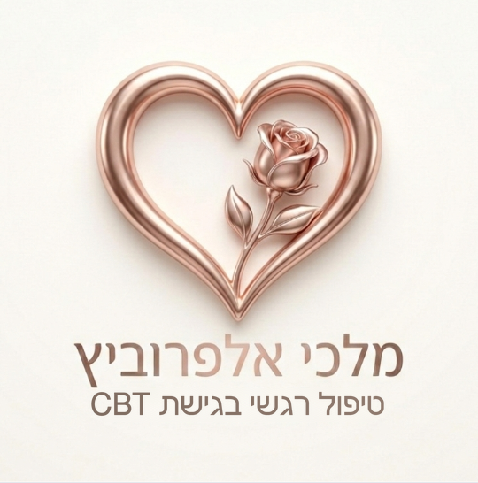

מלכי אלפרוביץ טיפול רגשי בגישת CBTנמאס לך לשדר שהכל בסדר, כשרק את יודעת כמה זה מתיש בפנים?
אם מצאת את עצמך כאן, את ממש לא היחידה. ויש מה לעשות עם זה.
אני יודעת שזה לא הגיוני, ובכל זאת המחשבה לא עוזבת אותי.
שוב צעקתי, ובלילה אני שוכבת ערה ומלקה את עצמי.
אני לא מספיק טובה. לא כאמא, לא כאישה, לא בשום דבר.
נותנת לכולם, ולי לא נשאר כלום.
מבחוץ הכול בסדר, ורק אני יודעת כמה קשה.
כבר הייתי בטיפול. דיברתי הרבה, ושום דבר לא השתנה.
מלכי היא מטפלת רגשית אלופה שעושה פלאים, ועובדת מדהים עם ילדים. אצלי היא עבדה עם הבת שלי, בשיתוף איתנו ההורים. כבר מהטיפול הראשון ראינו תוצאות מדהימות, ותוך 5 טיפולים הכל מאחורינו ב״ה, בסייעתא דשמיא.
CBT היא שיטה מהפכנית, שמשתמשים בה בכל העולם ונלמדת באוניברסיטאות הגדולות. היא מוציאה אנשים גם מטראומות קשות ומחרדות, גם כאלה שהיו שנים בטיפולים.
CBT היא טיפול קוגניטיבי-התנהגותי: מזהות את המחשבות שמפעילות את הרגש, בודקות אותן, ומתרגלות דרך חדשה להגיב, בבית ובחיים עצמם. זה תהליך קצר וממוקד, ולכן לפעמים, כשטיפולים ארוכים נתקעים, שולחים אותם ל-CBT.
אז אם יש לך משהו שאת הרבה זמן מנסה לטפל בו וזה לא צולח, או משהו נקודתי שאת רוצה לעבוד עליו, CBT בהחלט יכול לעזור.
במה אני יכולה לעזור לך ←הראש לא מפסיק להריץ "ומה אם". כשהלב דופק, הראש מריץ תרחישים, ואת מתחילה להימנע ממקומות ומדברים שפעם היו רגילים.
יודעת שזה לא הגיוני, ובכל זאת בודקת שוב. מחשבה או תמונה שנתקעת, בדיקות שחוזרות על עצמן, והרגשה שאי אפשר להירגע בלי לעשות "עוד פעם אחת".
הכול כבד, ואין כוח לכלום. ימים שהכל כבד, עייפות שלא עוברת, תקופה אחרי לידה או תקופה עמוסה במשפחה.
מתפוצצת, ואחר כך אוכלת את עצמך. להבין מה באמת מרגיז אותך, להציב גבול בלי לצעוק, ולהגיד "לא" בלי לחיות אחר כך עם אשמה.
חייבת שהכול יהיה מושלם. האמא הכי טובה, האישה הכי טובה, הבית הכי מסודר. ואת? מותשת.
הילד נתקע, ואת לא יודעת איך לעזור. פחדים, התקפי זעם, קושי בגן או בבית הספר. אני עובדת עם הילד, ונותנת להורים דרך לעזור לו בבית.
בטיפול CBT לא רק מדברים על מה שקשה. לומדים לתפוס את המחשבה שמפילה אותך ולעשות משהו אחר במקום, ומכל מפגש יוצאים עם צעד קטן שאפשר לעשות כבר השבוע, בבית.
בלי שהדאגות ירוצו לך בראש עד השעות הקטנות של הלילה.
בלי לבדוק, לשאול ולוודא עוד פעם ועוד פעם.
ולסיים את הערב בהרגשה שאת בשליטה, בלי לאכול את עצמך.
שמחות, אירועים, נסיעות ואנשים שהתגעגעת אליהם.
וליהנות ממה שיש, בלי הקול שאומר שזה אף פעם לא מספיק.
ולראות אותו מתחזק מול הפחדים והכעסים שלו.
וזה לא לוקח שנים. לפעמים מרגישים שינוי כבר אחרי כמה פגישות בודדות.
אני רוצה להתחילהרבה פעמים התגובה שלך טבעית לגמרי למה שאת עוברת, וזו נקודת ההתחלה.
מתמקדות במה שקורה עכשיו, ומתייחסות לעבר במידה שהוא משפיע על היום, תמיד עם מבט קדימה.
משימות מעשיות בין המפגשים, בהדרגה ובקצב שלך. השינוי קורה בחיים עצמם, לא רק בחדר.
המטרה היא לא רק להבין, אלא להרגיש את ההבדל בחיים עצמם.
כמטפלת חרדית אני מדברת בשפה שלך, בדיסקרטיות מלאה.
אני מלכי אלפרוביץ, מטפלת רגשית בגישת CBT.
לאורך השנים ליוויתי עשרות אמהות וילדים שהתמודדו עם כעסים, חרדות, מצבי רוח, מחשבות טורדניות ועוד.
ראיתי אמהות שהפסיקו לתת לכעסים או לפחדים לנהל אותן, ילדים שחזרו לישון בלילה, ונשים שלמדו להגיד "לא" ולהרגיש בסדר עם זה.
אצלי זה תהליך עומק: נותנות מקום לרגש, עובדות על המחשבות, ויוצאות עם כלים מעשיים שמביאים לשינוי אמיתי.
רגעים מוכרים מהבית, ומה אפשר לעשות איתם.
הצטרפי וקבלי תובנות קצרות וכלים מעשיים מהקליניקה, ישר לטלפון. ללא עלות.
תלוי במה שמביא אותך. CBT הוא טיפול ממוקד, ולפעמים יש שינוי כבר אחרי כמה פגישות בודדות. נדבר על זה כבר בהתחלה.
כן. מחקרים מראים שטיפול CBT בווידאו עובד טוב כמו פנים אל פנים. ככה גם לא צריך לסדר בייביסיטר ונסיעות.
לא. כל מה שנאמר בטיפול נשמר בסודיות מלאה.
אני נפגשת עם הילד או הנערה, ומדי פעם גם עם ההורים, כדי שתדעו מה לעשות בבית. כשההורים שותפים, השינוי מגיע מהר יותר.
מפגש של 50 דקות עולה 320 ש״ח. אפשר לקבל החזר מביטוחי בריאות פרטיים, בהתאם לפוליסה שלך. כדאי לבדוק מול חברת הביטוח.
לא צריך לדעת מה להגיד. התקשרי, או השאירי פרטים בכמה מילים, ואני אחזור אלייך.
התקשרי: 058-518-1285לפעמים זה לא הילדים, לא הבית ולא העומס. זה קול פנימי שלא נותן מנוחה.
אבחון קצר שיעזור לך לגלות איזה קול מנהל אותך, ומה אפשר לעשות איתו.
לאבחון ←